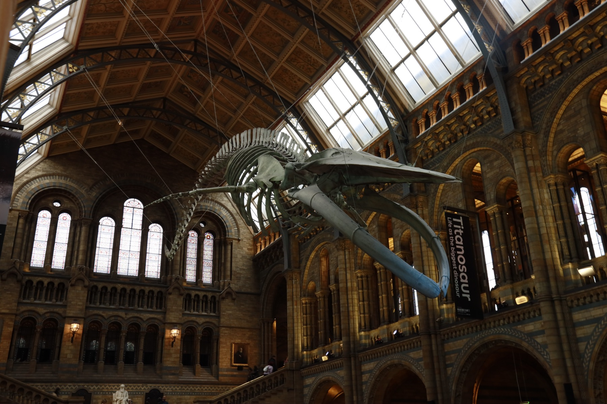
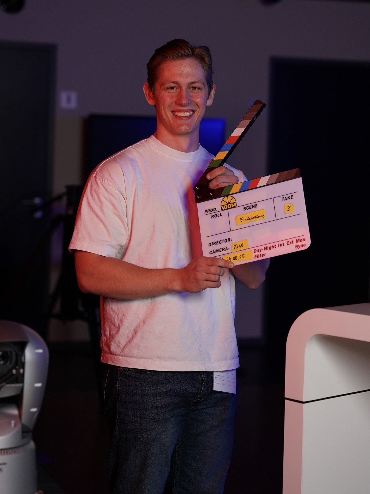
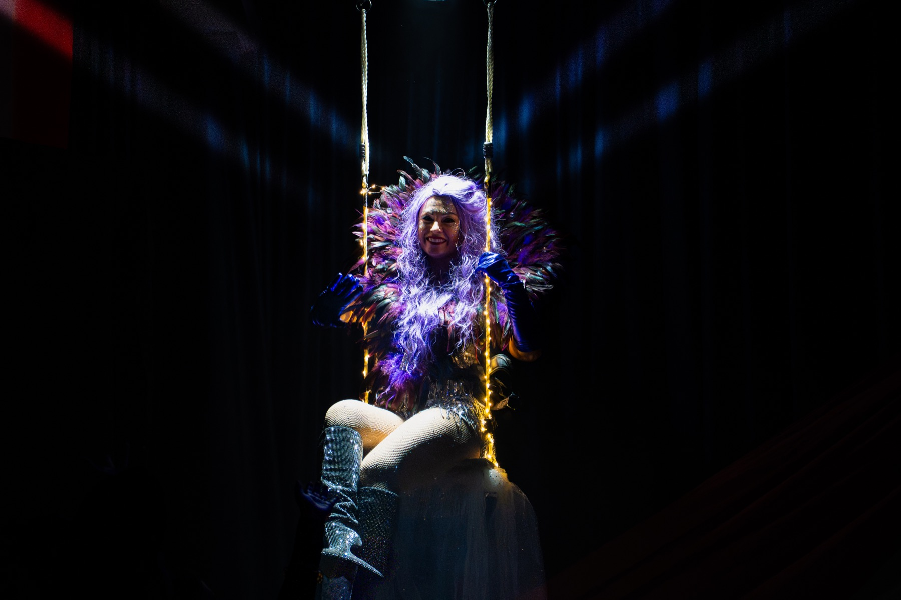

Foto
Stills, die nach Film aussehen
Fotos als ruhige Erweiterung der Filmwelt: für Website, Kampagne, Portraits und den ersten hochwertigen Eindruck.
Foto-Projekte ansehenVideograf & Storyteller
ByTobi begleitet Unternehmen, Orte und Menschen mit ruhiger Kamera und dokumentarischem Blick. Aus einem Dreh entstehen ein starker 16:9-Film und Social Clips, die dieselbe Geschichte weitererzählen.
Best Work
Ein Hauptfilm für Website, Präsentation oder Kampagne, dazu kurze Clips für Social. Nicht lauter, sondern klarer.
Arbeitsproben

Fotos als ruhige Erweiterung der Filmwelt: für Website, Kampagne, Portraits und den ersten hochwertigen Eindruck.
Foto-Projekte ansehen
Die Momente, in denen ein Unternehmen greifbar wird: Arbeit, Haltung, Energie.
Produktion anfragen
Atmosphäre, Textur und kleine Beobachtungen, die den Film glaubwürdig machen.
Mehr davon planenAuswahl
Leistungen
Was macht euch, euren Ort oder euer Angebot interessant? Daraus entsteht die Richtung vor dem ersten Take.
Ruhige Kameraarbeit, echtes Lichtgefühl und ein Blick für Szenen, die nicht gestellt wirken.
Ein Hauptfilm für Website oder Präsentation, dazu kurze Clips mit demselben Look für Social.
Über mich
Ich suche nicht nach dem lautesten Bild, sondern nach dem Moment, der hängen bleibt: Menschen bei der Arbeit, Orte mit Charakter, Unternehmen mit Haltung. Daraus baue ich Filme, die auf Websites funktionieren und als Social Clips weiterleben.
Kontakt
Schreib mir kurz, was du zeigen willst, wer zu sehen sein soll und ob der Fokus auf einem 16:9-Film, Social Clips oder beidem liegt.